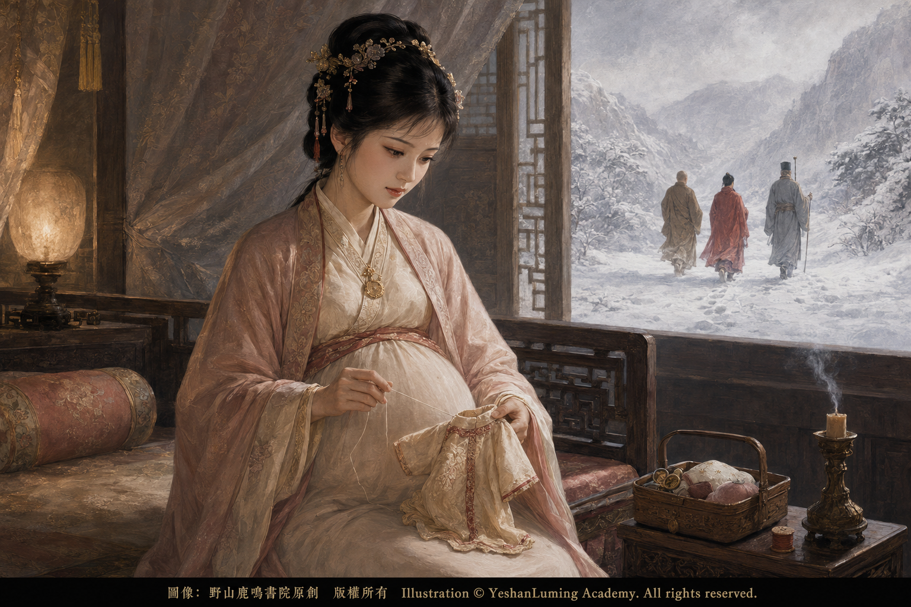

近乎完人的薛寶釵·得到一切卻是水中月 The Nearly Perfect Xue Baochai · She Gained Everything, Yet All Was Ultimately a Moon Reflected in Water The Nearly Perfect Xue Baochai · She Gained Everything, Yet All Was Ultimately a Moon Reflected in Water 近乎完人的薛寶釵·得到一切卻是水中月 中篇小說（121） Novella (121)
中文全文 Ch-full 中文介紹 Ch-intro 繁體/簡體 TC/SC 英文全文 Eng-full 英文介紹 Eng-intro
《紅樓夢》裡，很多女孩都死了。可薛寶釵不同，她沒有死。她甚至好像是整部《紅樓夢》中「最成功」的人。
她家世好，人品好，容貌好，才學好，性情穩重，舉止得體。賈母喜歡她，王夫人喜歡她，下人們也都喜歡她。就連最挑剔的讀者，也很難真正挑出她有什麼大錯。
她幾乎就是一個完人。
最後，她似乎也得到了世俗眼中一個女子所能得到的一切。金玉良緣成真，在賈府安排的調包計下，她嫁給了寶玉，成了名正言順的寶二奶奶。
可也正因為如此，她的悲劇反而更深，更讓人不能不深思。
她竭力按照那個世界的規矩活著，最後似乎也得到了世俗所能給予一個女子的一切。可那些東西，最終卻如同水中月，看得見，卻摸不著，到頭來仍是一場空。
寶釵初進賈府時，很多人便已經注意到，她與黛玉是完全不同的兩種女孩。
黛玉像風，像月，像雨夜裡一枝挺立的白玫瑰，美得驚心動魄，也冷得讓人不敢靠近；而寶釵卻像春日庭院裡的一朵牡丹，端莊、穩重、溫厚，永遠不會失態。
她總是從容的，也是大度的。別人爭，她不爭；別人生氣，她不動氣；別人哭，她也只是輕聲勸解。甚至連她居住的蘅蕪院，也和她本人一樣，如同雪洞一般，沒有多餘的裝飾，沒有脂粉氣，連房間都乾淨得近乎冷清。
她不像一個普通的花季少女，更像是一個還沒有真正年輕過，便已經學會壓抑自己慾望的人。而這，也正是她與黛玉最大的不同。
黛玉活的是「真」。
寶釵活的是「對」。
《紅樓夢》裡，很多女孩都死了。可薛寶釵不同，她沒有死。她甚至好像是整部《紅樓夢》中「最成功」的人。
她家世好，人品好，容貌好，才學好，性情穩重，舉止得體。賈母喜歡她，王夫人喜歡她，下人們也都喜歡她。就連最挑剔的讀者，也很難真正挑出她有什麼大錯。
她幾乎就是一個完人。
最後，她似乎也得到了世俗眼中一個女子所能得到的一切。金玉良緣成真，在賈府安排的調包計下，她嫁給了寶玉，成了名正言順的寶二奶奶。
可也正因為如此，她的悲劇反而更深，更讓人不能不深思。
她竭力按照那個世界的規矩活著，最後似乎也得到了世俗所能給予一個女子的一切。可那些東西，最終卻如同水中月，看得見，卻摸不著，到頭來仍是一場空。
寶釵初進賈府時，很多人便已經注意到，她與黛玉是完全不同的兩種女孩。
黛玉像風，像月，像雨夜裡一枝挺立的白玫瑰，美得驚心動魄，也冷得讓人不敢靠近；而寶釵卻像春日庭院裡的一朵牡丹，端莊、穩重、溫厚，永遠不會失態。
她總是從容的，也是大度的。別人爭，她不爭；別人生氣，她不動氣；別人哭，她也只是輕聲勸解。甚至連她居住的蘅蕪院，也和她本人一樣，如同雪洞一般，沒有多餘的裝飾，沒有脂粉氣，連房間都乾淨得近乎冷清。
她不像一個普通的花季少女，更像是一個還沒有真正年輕過，便已經學會壓抑自己慾望的人。而這，也正是她與黛玉最大的不同。
黛玉活的是「真」。
寶釵活的是「對」。
黛玉在意自己心中真正的感受，喜歡就是喜歡，難過就是難過。她可以哭，可以生氣，可以諷刺，也可以任性。她寧可讓別人看見自己的痛苦，也不願把真心藏起來。
寶釵卻活得很累。她似乎總要思考，什麼樣的話才是應該說的，什麼樣的事才是應該做的。她知道怎樣說話才能讓長輩高興，怎樣做事才不會得罪別人。她懂規矩，也懂世故。她明白一個女子在那個世界裡，若想平安地活下去，便不能過於任性，更不能完全按照自己的心意生活。
所以，她勸寶玉讀書，勸寶玉留心仕途經濟，希望他走上那個時代認為男子應該走的道路。很多讀者因此覺得她俗氣，覺得她不懂寶玉。
其實這倒也未必，她只是太清楚現實。
寶玉可以任性，因為他是賈府的公子，是賈母最疼愛的孫子；可女子不行。女子若不順著那套規矩生活，最後往往只有死路一條。晴雯便是例子，司棋也是例子，甚至連出身高貴、深受賈母疼愛的林黛玉，最後也沒能逃過悲慘的命運。
而寶釵，其實很早便看懂了這一切。
所以，她拼命讓自己變得「完美」。她不嫉妒，不失態，不抱怨。她把自己的真實感情和慾望一層一層包裹起來，不輕易外露。她更像一塊經過仔細打磨的玉，光滑、穩定，看不見一絲瑕疵和裂痕。
可也正因如此，她反而離真正的自己越來越遠。
《紅樓夢》裡有一段極有意思的情節。寶玉看見寶釵露出的一段雪白胳膊，一時竟看得發呆。那是極少數時候，寶釵身上忽然顯露出的一點屬於少女的氣息。
其實，寶釵並不是沒有感情，也不是對寶玉毫不在意。雖然她不像黛玉那樣，把愛寫在眼淚裡，但書中仍然留下了不少可以讓人感受到她關心寶玉、在意寶玉的細節。
寶玉被父親賈政毒打以後，寶釵親自送藥前來探望。她看見寶玉傷勢嚴重，說話之間流露出心疼，甚至情不自禁地紅了眼圈。寶玉失去通靈寶玉、神志昏亂以後，她也為他的病情和安危擔憂。
這些感情未必像黛玉那樣熾烈，也未必完全等同於黛玉對寶玉那種生死相許的愛，但不能因此就說寶釵對寶玉毫無真心。
她只是把自己的感情藏得很深。
黛玉把愛寫進眼淚，寶釵卻把感情藏進規矩。
也許她曾經相信，只要自己足夠好，足夠穩重，足夠符合那個世界對「好妻子」的一切要求，最後便有可能得到幸福。
可是，她最終才發現，自己相信的這一切都錯了。
因為寶玉真正愛的人，始終是林黛玉。這件事，整座大觀園裡幾乎所有人都看得出來。紫鵑知道，襲人知道，王熙鳳也知道。寶釵不可能完全看不出寶玉與黛玉之間的真實感情。
只是她習慣了接受長輩的安排，也習慣了相信禮法、婚姻和金玉良緣所代表的秩序。她究竟是不願承認，還是根本沒有選擇，恐怕很難說清楚。
寶釵太相信「道理」，她相信父母之命，相信金玉良緣，也許還相信婚姻可以慢慢培養感情。她或許以為，只要兩個人成了夫妻，日子久了，兩顆心總有可能慢慢靠近。
可是她沒有想到，人可以成親，靈魂卻仍然隔著千山萬水。
後來，終於到了那場極殘忍的婚禮。
寶玉失去通靈寶玉以後，神志昏憒，病情日益嚴重。賈母聽信了算命先生的話，認為寶玉必須迎娶一個「金命」的女子沖喜，才可能保住性命。賈母、王夫人和薛姨媽共同決定讓寶玉迎娶寶釵。
可是襲人知道，寶玉心裡真正愛的是黛玉。若是直接告訴他要娶寶釵，不但不能沖喜，反而可能要了他的命。於是，王熙鳳想出了一條偷梁換柱的調包計。
賈府上下都騙寶玉，告訴他即將迎娶的人是林黛玉。為了讓他相信，賈府甚至安排黛玉從南方帶來的丫鬟雪雁攙扶新娘。寶玉果然信以為真。
他滿心以為自己終於可以迎娶林妹妹，原本昏亂的神志竟然暫時有了一點好轉。他歡天喜地地換上新衣，一遍又一遍地追問，為什麼林妹妹還沒有來。
外面雖然沒有大擺筵席，賈府裡仍然張燈結綵。十二對宮燈排列在前，細樂聲中，八人大轎把新娘抬進了賈府。
可是實際上，那一夜，大觀園裡同時舉行了兩場婚禮。
一場是活人的婚禮。
一場是死人的婚禮。
一邊是寶釵身穿嫁衣，被送進洞房；另一邊，黛玉正在瀟湘館焚燒詩稿和舊帕，斬斷自己最後的一縷情思。
一邊張燈結綵，一邊冷冷清清。
一邊等待洞房花燭，一邊等待生命走到盡頭。
新人被送入洞房以後，寶玉看見扶著新娘的人是雪雁，更加相信紅蓋頭下面坐著的就是林妹妹。
他再也按捺不住，親手揭開了新娘的蓋頭。可是他睜眼一看，眼前坐著的人竟然不是林黛玉，而是盛裝的薛寶釵。
寶玉當場怔住了。
他不相信自己的眼睛，一隻手拿著燈，一隻手擦著眼睛，再三細看，才終於確認眼前的人果然是寶釵。
他懷疑自己仍然身在夢中，不斷詢問：「林姑娘呢？」
當眾人告訴他，賈府為他娶的本來就是寶姑娘時，他原本已經昏憒的神志變得更加混亂，口口聲聲只要去找林妹妹。他的舊病重新發作，只能被眾人扶到床上，最後昏沉睡去。
而在這場婚禮的另一邊，林黛玉孤零零地躺在瀟湘館裡。
當婚禮的樂聲從遠處隱約傳來時，黛玉已經淚盡。她在生命最後一刻喊出「寶玉，寶玉，你好……」，話還沒有說完，便香魂一縷，隨風而散。
寶玉與寶釵成婚的時辰，也正是林黛玉離開人世的時辰。
寶釵並非不知道這場婚姻的真相。她知道寶玉心裡真正愛的是黛玉，也知道賈府必須欺騙寶玉，這場婚禮才能完成。
可她也是同樣身不由己。
這樁婚事是賈母、王夫人、王熙鳳和薛姨媽共同決定的。作為一個服從母命、從不公開反抗長輩的女子，她沒有能力拒絕，也沒有勇氣逃走。
她所接受的全部教育，都在告訴她：聽從父母和長輩的安排，是一個好女兒應盡的本分；嫁給寶玉，則是金玉良緣早已注定的結果。所以，從她坐進花轎的那一刻開始，這場婚姻便已經注定成為她一生無法擺脫的悲劇。
寶釵與寶玉成親這一段，是《紅樓夢》中最讓人心碎的段落之一。通行本第九十七回寫道：
「寶玉睜眼一看，好像寶釵，心裡不信，自己一手持燈，一手擦眼，一看，可不是寶釵麼！」
寶玉發怔良久，又輕輕叫襲人道：「我是在那裡呢？這不是做夢麼？」
當襲人告訴他，眼前的新娘就是寶姑娘時，寶玉又問：「林姑娘呢？」
原文接著寫道：
「寶玉聽了，這會子糊塗更利害了。本來原有昏憒的病，加以今夜神出鬼沒，更叫他不得主意，便也不顧別的了，口口聲聲只要找林妹妹去。」
寶釵終於成了寶玉名正言順的妻子，卻永遠得不到寶玉真正的心。婚後的寶玉一直神志恍惚，無法接受眼前的金玉良緣。他心裡仍然只記掛著黛玉，甚至以為寶釵趕走了林妹妹，霸佔了新房。
最後，反而是寶釵親口告訴寶玉：林妹妹已經死了。
寶玉聽到這個消息，放聲大哭，倒在床上。神魂恍惚之間，他彷彿走到了陰司泉路，尋找已經死去的林黛玉。
寶釵之所以親口告訴他真相，是因為她明白，寶玉的病真正起於黛玉。若是繼續隱瞞，只會讓他永遠困在真假難分的幻想之中。只有讓他痛哭一場，徹底斷了希望，他的神志才有可能重新安定。
這件事顯示出寶釵的理智。
她明明知道，告訴丈夫他真正愛的另一個女人已經死去，等於承認丈夫真正愛的人並不是自己；可她仍然選擇說出真相，因為她知道，這樣做才可能救寶玉的命。
她越賢惠，越讓人心疼、心酸。
因為這場婚姻並不是由她決定的，她沒有能力改變什麼。她不是輸給了黛玉，而是輸給了真正的愛情。
她終於慢慢明白，有些人的心，是不能依靠婚姻得到的。婚姻可以讓兩個人住在同一間屋檐下，可以給一個女人正式妻子的名分，卻不能命令一顆心去愛另一個人。
後來，賈府被抄，家道衰敗。大觀園散了，那些曾經鮮花著錦、烈火烹油的日子，全都像一場夢。
寶玉後來恢復神志，重新讀書，甚至考中了舉人。所有人都以為他終於回到了世俗認可的道路上，也以為寶釵的苦日子已經過去。可是就在這時，寶玉走了。
他跟隨一僧一道出家而去，從此遠離紅塵。
有人說他出家，是看破了紅塵。其實，那也許不只是看破，更是因為他已經無法在這個世界裡繼續活下去。
他後來才知道，黛玉竟是在自己與寶釵成婚之時含恨死去；他也曾親眼見到晴雯被逐出大觀園後奄奄一息的悲慘模樣，看著一個又一個女孩被這個世界吞噬掉。
他已對眼前的世界徹底絕望，所以他走了。可是他走的時候，寶釵已經懷孕了。他不但拋下了自己的妻子，也拋下了一個尚未出生的孩子。
這時候，人們才忽然發現，原來寶釵也是受害者。

圖像：野山鹿鳴書院原創 版權所有 Illustration © YeshanLuming Academy. All rights reserved. 點擊查看大圖
Many girls die in Dream of the Red Chamber. Xue Baochai is different. She does not die. She even appears to be the “most successful” person in the entire novel.
She comes from a good family, possesses fine character, beauty, learning, a composed temperament, and impeccable manners. Grandmother Jia likes her. Lady Wang likes her. Even the servants like her. Even the most critical readers find it difficult to identify any serious fault in her.
She is almost a perfect person.
In the end, she appears to obtain everything that the conventional world believes a woman could desire. The union of gold and jade becomes a reality. Through the Jia family’s bridal substitution scheme, she marries Baoyu and becomes the formally recognized Second Young Mistress Bao.
Yet for precisely this reason, her tragedy is even more profound and all the more deserving of reflection.
She does everything possible to live according to the rules of that world, and in the end, she appears to receive everything that the conventional world can offer a woman. Yet all those things ultimately resemble the moon reflected in water—visible but impossible to touch. In the end, they amount to nothing.
When Baochai first arrives at the Jia household, many people immediately notice that she and Daiyu are two entirely different kinds of girls.
Daiyu is like the wind, the moon, and a white rose standing upright in the rain at night—so beautiful that she takes one’s breath away, yet so cold that people hesitate to approach her. Baochai, by contrast, is like a peony in a spring courtyard: dignified, steady, warmhearted, and never once losing her composure.
She is always calm and magnanimous. When others compete, she does not; when others become angry, she remains unruffled; when others weep, she merely offers gentle consolation. Even All-Spice Court, where she lives, resembles Baochai herself. It is like a snow cave, without unnecessary decoration or the slightest trace of cosmetics, so immaculate that it is almost desolate.
She does not resemble an ordinary girl in the bloom of youth. She is more like someone who has never truly been young before learning to suppress her own desires. And this is the greatest difference between Baochai and Daiyu.
Daiyu lives according to what is “true.”
Baochai lives according to what is “right.”
Many girls die in Dream of the Red Chamber. Xue Baochai is different. She does not die. She even appears to be the “most successful” person in the entire novel.
She comes from a good family, possesses fine character, beauty, learning, a composed temperament, and impeccable manners. Grandmother Jia likes her. Lady Wang likes her. Even the servants like her. Even the most critical readers find it difficult to identify any serious fault in her.
She is almost a perfect person.
In the end, she appears to obtain everything that the conventional world believes a woman could desire. The union of gold and jade becomes a reality. Through the Jia family’s bridal substitution scheme, she marries Baoyu and becomes the formally recognized Second Young Mistress Bao.
Yet for precisely this reason, her tragedy is even more profound and all the more deserving of reflection.
She does everything possible to live according to the rules of that world, and in the end, she appears to receive everything that the conventional world can offer a woman. Yet all those things ultimately resemble the moon reflected in water—visible but impossible to touch. In the end, they amount to nothing.
When Baochai first arrives at the Jia household, many people immediately notice that she and Daiyu are two entirely different kinds of girls.
Daiyu is like the wind, the moon, and a white rose standing upright in the rain at night—so beautiful that she takes one’s breath away, yet so cold that people hesitate to approach her. Baochai, by contrast, is like a peony in a spring courtyard: dignified, steady, warmhearted, and never once losing her composure.
She is always calm and magnanimous. When others compete, she does not; when others become angry, she remains unruffled; when others weep, she merely offers gentle consolation. Even All-Spice Court, where she lives, resembles Baochai herself. It is like a snow cave, without unnecessary decoration or the slightest trace of cosmetics, so immaculate that it is almost desolate.
She does not resemble an ordinary girl in the bloom of youth. She is more like someone who has never truly been young before learning to suppress her own desires. And this is the greatest difference between Baochai and Daiyu.
Daiyu lives according to what is “true.”
Baochai lives according to what is “right.”
Daiyu cares about what she truly feels. When she loves, she loves; when she is hurt, she is hurt. She can weep, become angry, speak sarcastically, and behave willfully. She would rather allow others to see her suffering than conceal her true heart.
Baochai, however, lives an exhausting life. She seems constantly compelled to consider which words ought to be spoken and which actions ought to be taken. She knows how to speak in ways that please her elders and how to behave without offending anyone. She understands rules, and she understands the ways of the world. She knows that if a woman wishes to live safely in that world, she cannot be too willful, much less live entirely according to her own heart.
Therefore, she urges Baoyu to study and pay attention to official advancement and worldly affairs, hoping that he will follow the path that men of his time are expected to take. Many readers consequently consider her vulgar and believe that she does not understand Baoyu.
But that may not really be true. She merely understands reality too well.
Baoyu can behave willfully because he is a young master of the Jia family and Grandmother Jia’s most cherished grandson. Women do not possess that freedom. If a woman refuses to live according to those rules, she often faces only a path toward death. Qingwen is one example, and Siqi is another. Even Lin Daiyu, born into a distinguished family and deeply loved by Grandmother Jia, is ultimately unable to escape a tragic fate.
Baochai understands all of this very early.
Therefore, she strives desperately to make herself “perfect.” She does not show jealousy, lose her composure, or complain. She wraps her true feelings and desires in layer after layer, never revealing them easily. She is like a piece of jade that has been meticulously polished—smooth, stable, and without a visible flaw or crack.
Yet precisely because of this, she moves farther and farther away from her true self.
Dream of the Red Chamber contains a particularly interesting scene. Baoyu catches sight of Baochai’s snow-white arm and stares at it in a daze. It is one of the rare moments when a trace of youthful femininity suddenly emerges from Baochai.
In truth, Baochai is not without feeling, nor is she indifferent to Baoyu. Although she does not write her love in tears as Daiyu does, the novel leaves many details through which we can sense her concern for Baoyu and the importance he holds for her.
After Baoyu is brutally beaten by his father, Jia Zheng, Baochai personally brings medicine and visits him. Seeing the severity of his injuries, she reveals her heartache in her words, and her eyes involuntarily redden. After Baoyu loses the Precious Jade of Spiritual Understanding and falls into a state of mental confusion, she also worries about his illness and safety.
These feelings may not be as passionate as Daiyu’s, nor are they necessarily the same as Daiyu’s willingness to live and die for Baoyu. Yet this does not mean that Baochai has no genuine feelings for him.
She simply conceals her feelings very deeply.
Daiyu writes love into her tears; Baochai hides her feelings within the rules.
Perhaps she once believed that if she were good enough, composed enough, and sufficiently conformed to everything that world demanded of a “good wife,” she might eventually find happiness.
Yet in the end, she discovers that everything she believed was wrong.
For the person Baoyu truly loves has always been Lin Daiyu. Almost everyone in the Grand View Garden can see this. Zijuan knows it, Xiren knows it, and Wang Xifeng knows it. Baochai cannot possibly be entirely unaware of the true feelings between Baoyu and Daiyu.
Yet she is accustomed to accepting the arrangements of her elders. She is also accustomed to believing in propriety, marriage, and the order represented by the union of gold and jade. Whether she refuses to acknowledge the truth or simply has no choice is difficult to determine.
Baochai places too much faith in “reason.” She believes in marriages arranged by parents and in the predestined union of gold and jade. Perhaps she also believes that affection can gradually grow within a marriage. She may imagine that once two people become husband and wife, their hearts will eventually draw closer with the passing years.
But she never imagines that two people may marry while their souls remain separated by a thousand mountains and ten thousand rivers.
At last, the exceedingly cruel wedding day arrives.
After Baoyu loses the Precious Jade of Spiritual Understanding, his mind becomes clouded and his illness grows steadily worse. Grandmother Jia believes the words of a fortune-teller, who says that Baoyu must marry a woman whose destiny belongs to Metal to counteract his illness and possibly save his life. Grandmother Jia, Lady Wang, and Aunt Xue jointly decide that Baoyu should marry Baochai.
Xiren, however, knows that the person Baoyu truly loves is Daiyu. If he is told directly that he must marry Baochai, the marriage will not cure him but may instead cost him his life. Wang Xifeng therefore devises a bridal substitution scheme.
Everyone in the Jia household deceives Baoyu, telling him that the woman he is about to marry is Lin Daiyu. To convince him, the family even arranges for Xueyan, the maid Daiyu brought from the South, to support the bride. Baoyu believes them completely.
Convinced that he can finally marry Cousin Lin, Baoyu’s confused mind temporarily shows some improvement. Overjoyed, he changes into his wedding clothes and repeatedly asks why Cousin Lin has not yet arrived.
Although no grand banquet is held outside, the Jia residence is still decorated with lanterns and festive ornaments. With twelve pairs of palace lanterns arranged before it and soft music playing, an eight-bearer bridal sedan carries the bride into the Jia residence.
But in reality, two weddings take place in the Grand View Garden that night.
One is a wedding for the living.
The other is a wedding for the dead.
On one side, Baochai is dressed as a bride and escorted into the bridal chamber. On the other, Daiyu is burning her poetry manuscripts and the old inscribed handkerchiefs in Bamboo Lodge, severing the final thread of her love.
One side is illuminated with festive lanterns; the other is cold and desolate.
One side awaits the wedding chamber; the other awaits the end of life.
After the bride enters the bridal chamber, Baoyu sees Xueyan supporting her and becomes even more convinced that the person beneath the red bridal veil is Cousin Lin.
Unable to restrain himself any longer, he personally lifts the bride’s veil. Yet when he opens his eyes, the person seated before him is not Lin Daiyu but Xue Baochai in magnificent bridal dress.
Baoyu freezes in shock.
Unable to believe his eyes, he holds a lamp in one hand and rubs his eyes with the other. Only after looking repeatedly does he finally confirm that the woman before him is indeed Baochai.
Suspecting that he is still dreaming, he repeatedly asks, “Where is Miss Lin?”
When everyone tells him that the Jia family has always intended him to marry Miss Bao, his already confused mind descends into even greater disorder. He insists over and over that he must find Cousin Lin. His old illness returns, and the others can only help him onto the bed, where he eventually falls into a stupor.
Meanwhile, on the other side of this wedding, Lin Daiyu lies alone in Bamboo Lodge.
As the music from the wedding reaches her faintly from afar, Daiyu has already exhausted her tears. In the final moment of her life, she cries, “Baoyu, Baoyu, how could you…” Before she can finish, her fragrant soul drifts away upon the wind.
The hour when Baoyu and Baochai marry is also the hour when Lin Daiyu departs from the world.
Baochai is not unaware of the truth behind this marriage. She knows that the person Baoyu truly loves is Daiyu, and she also knows that the Jia family must deceive Baoyu for the wedding to take place.
Yet she is equally powerless to control her fate.
The marriage is jointly decided by Grandmother Jia, Lady Wang, Wang Xifeng, and Aunt Xue. As a woman who obeys her mother and never openly defies her elders, Baochai has neither the ability to refuse nor the courage to flee.
Everything she has been taught tells her that obeying her parents and elders is the duty of a good daughter, and that marrying Baoyu is the fulfillment of the long-predestined union of gold and jade. Therefore, from the moment she enters the bridal sedan, the marriage is already destined to become a tragedy from which she will never escape.
The marriage of Baochai and Baoyu is one of the most heartbreaking passages in Dream of the Red Chamber. Chapter Ninety-Seven of the commonly transmitted 120-chapter edition reads:
“Baoyu opened his eyes and saw what looked like Baochai. Unable to believe it, he held the lamp in one hand and rubbed his eyes with the other. He looked again—and was it not Baochai!”
Baoyu remained stunned for a long while before softly asking Xiren, “Where am I? Is this not a dream?”
When Xiren told him that the bride before him was Miss Bao, Baoyu asked again, “Where is Miss Lin?”
The text continues:
“When Baoyu heard this, his confusion grew even worse. He had already been suffering from mental derangement, and after the ghostly bewilderment of that night, he no longer knew what to believe. Disregarding everything else, he repeatedly insisted that he must go and find Cousin Lin.”
Baochai finally becomes Baoyu’s lawful wife, yet she can never possess his true heart. After the wedding, Baoyu remains mentally confused and cannot accept the union of gold and jade before him. His heart remains fixed upon Daiyu. He even imagines that Baochai has driven Cousin Lin away and taken possession of the bridal chamber.
In the end, it is Baochai herself who tells Baoyu that Cousin Lin is dead.
When Baoyu hears the news, he bursts into loud sobs and collapses upon the bed. In his delirium, he seems to travel to the shadowy road of the underworld in search of the dead Lin Daiyu.
Baochai tells him the truth because she understands that the true source of Baoyu’s illness is Daiyu. If the truth remains concealed, he will stay forever trapped in an illusion where truth and falsehood cannot be distinguished. Only by allowing him to weep fully and abandon all remaining hope might his mind become stable again.
This reveals Baochai’s rational strength.
She knows perfectly well that telling her husband of the death of the other woman he truly loves is equivalent to acknowledging that she herself is not the person who possesses his heart. Yet she still chooses to reveal the truth because she knows that doing so may be the only way to save Baoyu’s life.
The more virtuous she is, the more heartbreaking and painful her fate becomes.
For this marriage is not her decision, and she has no power to change it. She does not lose to Daiyu. She loses to true love.
She gradually comes to understand that some hearts cannot be obtained through marriage. Marriage can place two people beneath the same roof and give a woman the formal status of a lawful wife, but it cannot command one heart to love another.
Later, the Jia family’s property is confiscated, and the household falls into decline. The Grand View Garden disperses, and those days of brocade adorned with flowers and oil poured upon blazing flames vanish like a dream.
Baoyu later regains his senses, returns to his studies, and even passes the provincial civil service examination. Everyone believes that he has finally returned to the path approved by the conventional world and that Baochai’s bitter days are over. But at precisely this moment, Baoyu leaves.
He follows a Buddhist monk and a Daoist priest, renouncing the world and departing forever from the realm of mortal life.
Some say that he becomes a monk because he has seen through the emptiness of the mortal world. Yet perhaps it is not merely that he sees through it. Perhaps he can no longer continue living within it.
Only later does he learn that Daiyu died in bitterness at the very hour of his marriage to Baochai. He has also personally seen Qingwen’s tragic condition as she lay near death after being expelled from the Grand View Garden, and he has watched one girl after another be devoured by that world.
He has become utterly disillusioned with the world before him, and so he leaves. But when he departs, Baochai is already pregnant. He abandons not only his wife but also a child who has not yet been born.
Only then do people suddenly realize that Baochai, too, is a victim.
Through obedience and endurance, she has shaped herself into a nearly perfect woman. In the end, she does obtain everything that many people dream of possessing: she marries into the Jia family, becomes Baoyu’s lawful wife, and even conceives a child of the Jia family.
Yet when she finally obtains all of this, she discovers that it is nothing more than the moon reflected in water—visible but impossible to touch.
圖像：野山鹿鳴書院原創 版權所有 Illustration © YeshanLuming Academy. All rights reserved. 點擊查看大圖
返回介紹 Back to Intro
返回介紹 Back to Intro